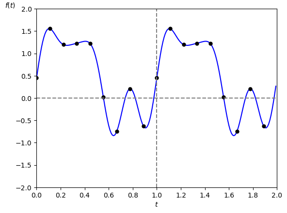

$\textrm{N} = 5$ とした例

さて IDFT の式を見て複素フーリエ級数展開
\[ f(t) = \sum_{k = -\infty}^{\infty} \left \{ \textrm{C}[k] \cdot \textrm{e}^{\{j \cdot k \cdot w_1 \cdot t \}} \right \} \]を思い出した人がいると思いますが、実は
DFT 係数は複素フーリエ係数のディジタル信号版
同様に
IDFT は複素フーリエ級数展開のディジタル信号版
に相当します。
ここでは DFT とフーリエ級数展開の関係について話します。
※ 長い割に結論は上に書いた通りなので、必要無い人はこのページを飛ばして結構です。
まず「DFT 係数は複素フーリエ係数のディジタル信号版」の方から説明します。
DFT を求める対象とする周期性ディジタル信号 $f[i]$ の周期を $\textrm{N}$ [点]、サンプリング間隔を $\tau$ [秒]、サンプリング角周波数を $w_s = 2\pi/\tau$ [rad/秒]とします。
また $f[i]$ は周期 $\textrm{T} = \tau \cdot \textrm{N}$ [秒]、基本角周波数 $w_1 = 2\pi/\textrm{T}$ [rad/秒]の周期性アナログ信号 $f(t)$ からサンプリングしたとします。
するとサンプリングの学習項目で説明した様に
\begin{align*} f[i] = f( \tau \cdot i ) \end{align*}
という関係式が出てきます(図1)。
$\textrm{N} = 5$ とした例
では早速 $f[i]$ をアナログ信号化した信号
\begin{align*} f'(t) = \begin{cases} f[i] &,\ (t = \tau \cdot i) \\[5pt] 0 &,\ \text(それ以外の時刻) \end{cases} \end{align*}
を用いて複素フーリエ係数を求めてみましょう。
ところがこの $f'(t)$ の複素フーリエ係数は
という様に結果が 0 になってしまいます。
積分の幅が 0 であったことが失敗の原因でしたので、今度は図 2 の様に間隔が $\tau$ [秒]、幅が $2\epsilon$ [秒] のパルス波 $g(t)$ を $f(t)$ にかけて作成した信号に対して複素フーリエ係数を求めて最後に $\epsilon \rightarrow 0$ とすることを考えます。
$\epsilon$ を微小な正の定数とする

ただし $\epsilon$ が小さいとやはり積分結果がほぼ 0 になってしまうので、積分結果が 0 にならないように充分大きい正規化パラメータ $\alpha > 0$ も掛けた信号
\[ f'(t) = \alpha \cdot f(t) \cdot g(t) \]に対して複素フーリエ係数を求めます。
すると今回は
\begin{align*} \textrm{C}[k] &= \frac{\alpha}{\textrm{T}} \int_{0}^{\textrm{T}} f(t) \cdot g(t) \cdot \textrm{e}^{\{-j \cdot k \cdot w_1 \cdot t \}} \textrm{dt} \\[5pt] &= \frac{\alpha}{\textrm{T}} \sum_{i=0}^{\textrm{N}-1} \left \{ \int_{\tau \cdot i-\epsilon}^{\tau \cdot i +\epsilon} f(t) \cdot \textrm{e}^{\{-j \cdot k \cdot w_1 \cdot t \}} \right \} \textrm{dt} \end{align*}
が得られます。
ここで(本当はいろいろ条件が必要なのですが面倒なので全部条件を満たしていると考えることにすると)積分の平均値の定理より
\[
\int_{\tau \cdot i-\epsilon}^{\tau \cdot i +\epsilon} f(t) \cdot \textrm{e}^{\{-j \cdot k \cdot w_1 \cdot t \}} \textrm{dt}
= 2\epsilon \cdot f(\xi_i) \cdot \textrm{e}^{\{-j \cdot k \cdot w_1 \cdot \xi_i \}}
\]
を満たす $\xi_i$ が
\begin{align*} \tau \cdot i - \epsilon \leq \xi_i \leq \tau \cdot i + \epsilon \end{align*}
の範囲に必ず存在します。
よってこの式を $\textrm{C}[k]$ に代入して
さらに正規化パラメータ $\alpha$ は任意の正整数だったので(やや恣意的ではありますが) $\alpha = \textrm{T}/(2\epsilon\textrm{N})$ として
\[ \textrm{C}[k] = \frac{1}{\textrm{N}} \sum_{i=0}^{\textrm{N}-1} \left \{ f(\xi_i) \cdot \textrm{e}^{\{-j \cdot k \cdot w_1 \cdot \xi_i \}} \right \} \]あとは $\epsilon \rightarrow 0 $ とすることで $\xi_i \rightarrow \tau \cdot i $ となりますので、
\begin{align*} \textrm{C}[k] &= \frac{1}{\textrm{N}} \sum_{i=0}^{\textrm{N}-1} \left \{ f(\tau \cdot i ) \cdot \textrm{e}^{\{-j \cdot k \cdot w_1 \cdot \tau \cdot i \}} \right \} \\[5pt] (w_1\cdot \tau = 2\pi/\textrm{N}\ \text{より}) &= \frac{1}{\textrm{N}} \sum_{i=0}^{\textrm{N}-1} \left \{ f[i] \cdot \textrm{e}^{\{-j \cdot k \cdot \frac{2\pi}{\textrm{N}} \cdot i \}} \right \} \end{align*}となり DFT 係数の計算式が導出されました。
ところで計算途中で出てきた式を変形すると
\begin{align*} \textrm{C}[k] &= \frac{\alpha}{\textrm{T}} \int_{0}^{\textrm{T}} f(t) \cdot g(t) \cdot \textrm{e}^{\{-j \cdot k \cdot w_1 \cdot t \}} \textrm{dt} \\[5pt] (\alpha = \textrm{T}/(2\epsilon\textrm{N})\ \text{を代入}) &= \frac{1}{\textrm{N}} \int_{0}^{\textrm{T}} f(t) \cdot \left \{ \frac{g(t)}{2\epsilon} \right \} \cdot \textrm{e}^{\{-j \cdot k \cdot w_1 \cdot t \}} \textrm{dt} \\[5pt] \end{align*}
となりますが、$\epsilon \rightarrow 0$ の時 $g(t)/(2\epsilon)$ はディラックのデルタ関数 $\delta(t)$ を $\tau$ [秒]おきに並べた信号になります(図3)。
図3の様な信号の事を「くし型関数」と呼びます。

つまり
\[ f'(t) = \sum_{i=-\infty}^{\infty} f(t) \cdot \delta(t - \tau \cdot i ) \]の様に
「$f(t)$ にくし型関数をかけて作った周期性インパルス信号 $f'(t)$ の複素フーリエ係数が DFT 係数」
ということも出来ます。
次に「IDFT は複素フーリエ級数展開のディジタル信号版」について説明します。
単純に考えれば DFT 係数を複素フーリエ級数展開に代入するだけで IDFT が導出される様な気がしますが、実はそうすると $f[i] = \infty$ または $f[i] = -\infty$ または $f[i] = 0$ となって上手く行きません。
(1)の最後の方で述べた様に「周期性インパルス信号の複素フーリエ係数が DFT 係数」でしたので当然の話ではあるのですが、一応真面目に証明すると次の様になります。
まず複素フーリエ級数展開に DFT 係数を代入して $f[i]$ を求めます。
なお $f[i]$ は周期性信号なので $i$ の範囲は $0 \leq i \leq \textrm{N}-1$ とします。
ここで周期 $\textrm{N}$ [点] を周期 $\textrm{T}$ [秒] に変換すると $\textrm{T} = \tau \cdot \textrm{N}$ だったので
\[ \frac{2\pi}{\textrm{N}} = \frac{2\pi\tau}{\tau \cdot \textrm{N}} = \frac{2\pi\tau}{\textrm{T}} = w_1 \cdot \tau \]を代入して
\begin{align*} f[i] &= \sum_{k = -\infty}^{\infty} \left \{ \left [ \frac{1}{\textrm{N}} \sum_{i'=0}^{\textrm{N}-1} \left \{ f[i'] \cdot \textrm{e}^{\{-j \cdot k \cdot w_1 \cdot \tau \cdot i' \}} \right \} \right ] \cdot \textrm{e}^{\{j \cdot k \cdot w_1 \cdot \tau \cdot i \}} \right \} \\[5pt] &= \sum_{i'=0}^{\textrm{N}-1} \left \{ f[i'] \cdot \left [ \frac{1}{\textrm{N}} \sum_{k = -\infty}^{\infty} \left \{ \textrm{e}^{\{-j \cdot k \cdot w_1 \cdot \tau \cdot i'\}} \cdot \textrm{e}^{\{j \cdot k \cdot w_1 \cdot \tau \cdot i \}} \right \} \right ] \right \} \\[5pt] &= \sum_{i'=0}^{\textrm{N}-1} \left \{ f[i] \cdot \left [ \frac{1}{\textrm{N}} \sum_{k = -\infty}^{\infty} \textrm{e}^{\{j \cdot k \cdot w_1 \cdot \tau \cdot (i - i') \}} \right ] \right \} \\ \end{align*}
となります。
さて $i'$ に関する総和において、 $i' = i$ の項は
となります。
次に $i' \neq i$ の項が 0 になることを証明します。
$i' \neq i$ の項はこのままでは収束しませんので、一旦ラプラス変換の様に複素角周波数を導入します。
具体的には
を
\[ s = \sigma + j \cdot w_1 \cdot (i-i') \]
に置き換えて後から $\sigma \rightarrow 0$ とします。
すると
となりますが、少しごちゃごちゃして来たので更に
\[ z = \textrm{e}^{s \cdot \tau} \]で置き換えて
\begin{align*} f[i'] \cdot \frac{1}{\textrm{N}} \cdot \left [ \lim_{\sigma \rightarrow 0} \sum_{k = -\infty}^{\infty} \textrm{e}^{\{ s \cdot \tau \cdot k \}} \right ] &= f[i'] \cdot \frac{1}{\textrm{N}} \cdot \left [ \lim_{\sigma \rightarrow 0} \sum_{k = 0}^{\infty} z^k + \lim_{\sigma \rightarrow 0} \sum_{k = 0}^{\infty} z^{-k} -1 \right ] \\[5pt] \end{align*}
とします。
さてここで $\sigma < 0$ なら
$\sigma > 0$ なら
\[ |z^{-1}| = |\textrm{e}^{\{ -s \cdot \tau \}}| = \textrm{e}^{\{ -\sigma \cdot \tau \}} < 1 \]となるので、最初の lim は $\sigma$ を負の領域内で、2番目の lim は正の領域内で 0 に近づけることにすれば無限等比級数の和が収束するので
\begin{align*} f[i'] \cdot \frac{1}{\textrm{N}} \cdot \left [ \lim_{\sigma \rightarrow 0} \sum_{k = -\infty}^{\infty} \textrm{e}^{\{ s \tau \cdot k \}} \right ] &= f[i'] \cdot \frac{1}{\textrm{N}} \cdot \left [ \lim_{\sigma \rightarrow 0} \frac{1}{1-z } + \lim_{\sigma \rightarrow 0} \frac{1}{1-z^{-1}} -1 \right ] \\[5pt] (z_0 = \lim_{\sigma \rightarrow 0} z\ \text{とおいて}) &= f[i'] \cdot \frac{1}{\textrm{N}} \cdot \left [ \frac{1}{1-z_0} + \frac{1}{1-z_0^{-1}} -1 \right ] \\[5pt] &= f[i'] \cdot \frac{1}{\textrm{N}} \cdot \left [ \frac{(1-z_0^{-1}) + (1 - z_0)}{(1-z_0)\cdot(1-z_0^{-1})} -1 \right ] \\[5pt] &= f[i'] \cdot \frac{1}{\textrm{N}} \cdot \left [ \frac{2-z_0^{-1}- z_0}{2-z_0^{-1}- z_0} -1 \right ] \\[5pt] &= 0 \end{align*}となります。
長くなりましたが、以上より DFT 係数をそのまま複素フーリエ級数展開に代入すると $f[i] = \infty$ または $f[i] = -\infty$ または $f[i] = 0$ となることが分かりました。
この様になる根本的な原因は $k$ の総和を $-\infty$ から $\infty$ の範囲で取っていた事であり、そもそも DFT 係数は周期性を持ってますので全ての $k$ に関して足し合わせる必要もありません。
そこで $k$ の総和の範囲を $0$ から $\textrm{N}-1$ に限定した
\begin{align*} f[i] = f( \tau \cdot i) &= \sum_{k = 0}^{\textrm{N}-1} \left \{ \textrm{C}[k] \cdot \textrm{e}^{\{j \cdot k \cdot w_1 \cdot \tau \cdot i \}} \right \} \\[5pt] (w_1\cdot\tau = 2\pi/\textrm{N}\ \text{より}) &= \sum_{k=0}^{\textrm{N}-1} \left \{ \textrm{C}[k] \cdot \textrm{e}^{\{j \cdot k \cdot \frac{2\pi}{\textrm{N}} \cdot i \}} \right \} \end{align*}
を IDFT として定義することにします。
すると DFT 係数から $f[i]$ が正しく復元出来るようになります。
※ この証明は簡単ですしネットでいくらでも検索出来ますので省略します。